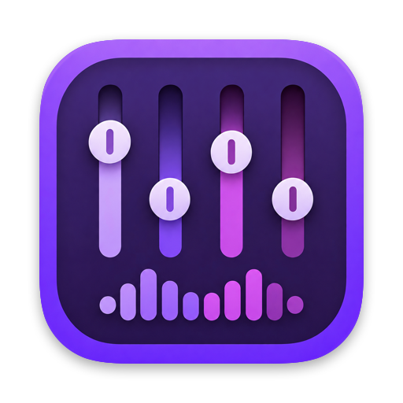
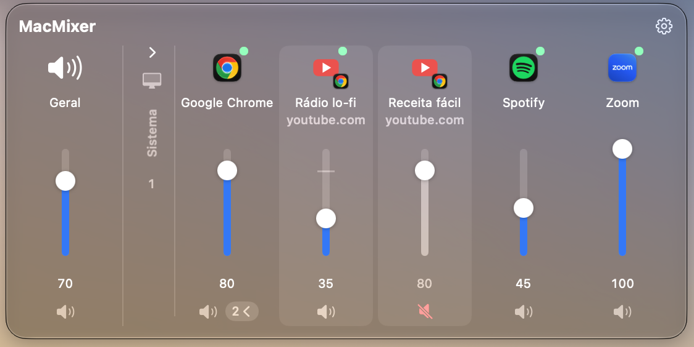

App de barra de menus para macOS 15+
Abaixe aquela aba barulhenta do YouTube sem mexer na sua chamada do Zoom. O MacMixer dá a cada app e a cada aba o próprio controle, direto na barra de menus, como o mixer de volume do Windows.
O MacMixer roda no Mac. Mande o link para você e teste lá.
Enviar para o meu Mac7 dias grátis · Sem cadastro, sem cartão · Depois, US$ 9,99 uma vez, sem assinatura

Um controle deslizante e um botão de mudo para cada app que está tocando som: música, chamadas, jogos, vídeos.
Com a extensão gratuita, cada aba do Chrome, Arc ou Safari ganha o próprio controle. Abaixe uma aba barulhenta sem mexer na sua chamada.
Cada app volta com o volume que você escolheu na próxima vez que tocar. O MacMixer abre junto com o Mac e fica na barra de menus.
Apps que você deixa em 100% tocam exatamente como antes. O volume do navegador funciona como teto das abas, e os sons do sistema ficam numa seção separada.
O macOS pede permissão para capturar o áudio na primeira vez que você muda um volume. É assim que a Apple deixa um app ajustar o som de outro: o MacMixer processa o som em tempo real, no seu Mac. Nada é gravado, guardado ou enviado.
Não há driver de áudio nem extensão de sistema para instalar, nem conta, estatísticas de uso ou anúncios. O app só acessa a internet para conferir sua licença e procurar atualizações.
Pague uma vez, use para sempre.
Os pagamentos são processados pelo Dodo Payments, nosso Merchant of Record, que cuida dos impostos sobre a venda.
Para mudar o volume de um app, o MacMixer passa o som desse app pelo próprio controle de volume, e o macOS exige a sua permissão para isso. O som é processado em tempo real no seu Mac. Nada é gravado, guardado ou enviado.
Sim. Ele é assinado e notarizado pela Apple, usa as APIs de áudio da própria Apple e não instala drivers nem extensões de sistema. Não há conta, e o seu áudio nunca sai do Mac.
Baixe o MacMixer e use todos os recursos por 7 dias, sem cadastrar pagamento. Quando o teste acaba, o app para de ajustar os volumes e todo o som volta ao normal até você ativar uma licença.
Depois da compra, a chave de licença chega por e-mail. Abra MacMixer › Ajustes › Licença, cole a chave e clique em Ativar. Para levar a licença a outro Mac, desative-a no Mac atual.
Não. Sem ela, o MacMixer controla cada navegador como um todo. Com ela, cada aba ganha o próprio controle. No Safari, a extensão vem com o app; no Chrome e no Arc, ela é carregada em cerca de um minuto pelo modo do desenvolvedor, com o passo a passo em MacMixer › Ajustes.
O SoundSource é uma ferramenta profissional, com efeitos, equalizador, reforço de volume e saída de áudio por app. O MacMixer faz uma coisa só: controle de volume simples para cada app e cada aba do navegador, por US$ 9,99. Se você precisa de equalizador e roteamento de áudio, o SoundSource é excelente; se só quer abaixar o som das coisas, o MacMixer é mais leve e mais barato.
Algumas ferramentas grátis são ótimas. O MacMixer adiciona volume por aba no Chrome, Arc e Safari, funciona sem instalar um driver de áudio virtual, lembra o nível de cada app e recebe atualizações automáticas. Teste grátis por 7 dias e decida.
Sim. O MacMixer confere a licença uma vez por dia quando está online e continua funcionando por até 30 dias sem conexão.
O MacMixer está em inglês, português e espanhol, e segue o idioma do seu Mac.
Sim, em até 14 dias após a compra. Veja a política de reembolso.